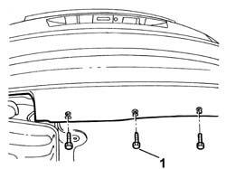
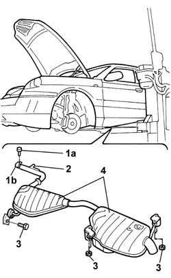

1076B20 Rear exhaust SILENCER - R.R.
- Path
- Procedures > 10 ENGINE > 1076 EXHAUST PIPES AND SILENCERS > 1076B EXHAUST PIPES AND SILENCERS > 1076B20 Rear exhaust SILENCER - R.R.
- Kind
- repair procedure (removal / refitting; the operation number is the code)
- Applies to
- engines: 2.0 TB, 2.4 20V, 3.0 V6, 3.2 V6; all production periods
- Interactive page
- https://sloeber94.github.io/elrnDB-lThss/en/#/75131
Applies to: engines: 2.0 TB, 2.4 20V; all production periods
 Removing
Removing
 Refitting
Refitting- Position the vehicle on a lift.
1. Undo the lower bolts fixing the rear bumper to gain access to the bolts fixing the rear mounting brackets.

Applies to: engines: 2.0 TB, 2.4 20V; all production periods
1. Undo the bolt (1a) fixing the metal collar (1b).
2. Release the pin from the rubber mounting on the bodyshell.
3. Undo the bolts fixing the exhaust pipe brackets.
4. Remove the rear exhaust silencers.

Applies to: engines: 2.0 TB, 2.4 20V; all production periods
Refitting
Removing- Join the rear silencers to the exhaust pipe using the metal band.
- Tighten the bolt fixing the metal collar.
 | Value - daNm | Fastening | Component | Ø |
|---|---|---|---|---|
. | 4.5 | - | REAR SILENCER EXHAUST | M10X1.25 |
- Tighten the bolts fixing the mounting brackets to the bodyshell.
- Fit the pin for the silencer in the rubber mounting.
- Tighten the lower bolts fixing the rear bumper.
- Remove the vehicle from the lift.
Applies to: engines: 3.0 V6, 3.2 V6; all production periods
Removing
Refitting- Position the vehicle on a lift.
1. Undo the lower bolts fixing the rear bumper to gain access to the bolts fixing the rear mounting brackets.
Applies to: engines: 3.0 V6, 3.2 V6; all production periods
1. Undo the bolt (1a) fixing the metal collar (1b).
2. Release the pin from the rubber mounting on the bodyshell.
3. Undo the bolts fixing the exhaust pipe brackets.
4. Remove the rear exhaust silencers.
Applies to: engines: 3.0 V6, 3.2 V6; all production periods
Refitting
Removing- Join the rear silencers to the exhaust pipe using the metal band.
- Tighten the bolt fixing the metal collar.
| Value - daNm | Fastening | Component | Ø |
|---|---|---|---|---|
. | 4.5 | - | REAR SILENCER EXHAUST | M10X1.25 |
- Tighten the bolts fixing the mounting brackets to the bodyshell.
- Fit the pin for the silencer in the rubber mounting.
- Tighten the lower bolts fixing the rear bumper.
- Remove the vehicle from the lift.
Topics that link to this page (9)
- 1040A10 FUEL TANK - R.R. and decant fuel
- 1040A14 FUEL TANK - R.R. for REPLACEMENT
- 1076A40 Exhaust pipe HEAT SHIELDS - R.R.
- 1076B10 Exhaust PIPE assembly - R.R.
- 3340B74 Rigid pipes from connectors to rear brakes - R.R.
- 4420C10 Rear suspension ANTI-ROLL BAR - R.R.
- 4420C80 Rear suspension CAMBER ROD - R.R.
- 4420D10 REAR SUSPENSION AXLE - R.R.
- 4450A40 REAR WHEEL GEOMETRY - Check using optical equipment - Includes rear wheel toe-in adjustment if necessary